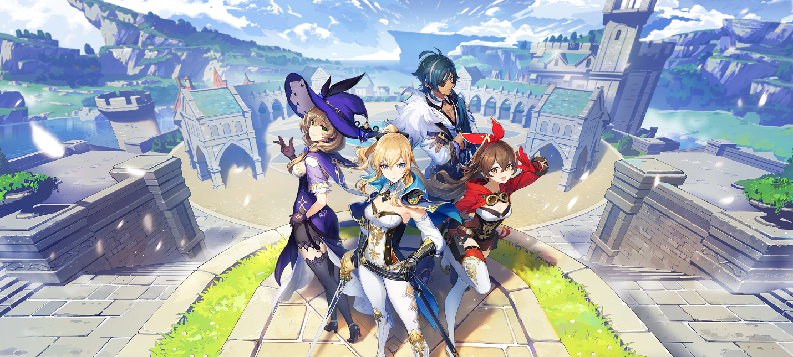
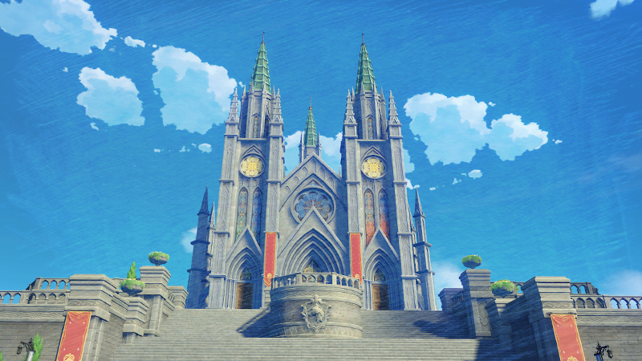
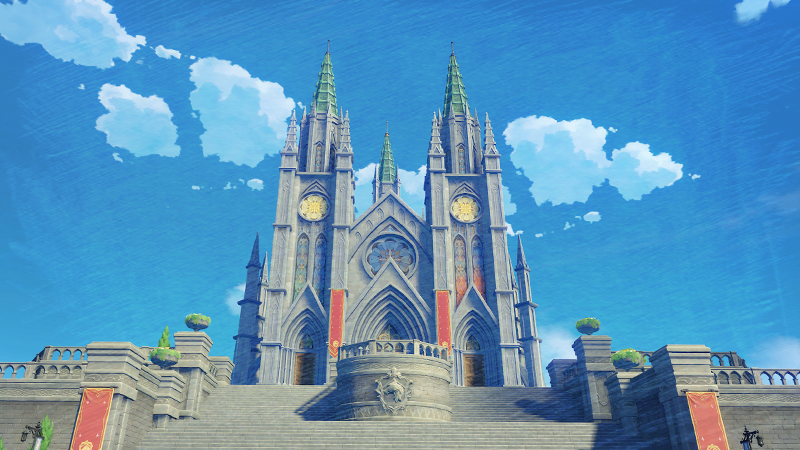

ℬнезапно, чистый разум не скован границами
Подробнее |
|
|


Genshin Impact — компьютерная игра в жанре Action-adventure с открытым миром и элементами RPG, разработанная китайской компанией miHoYo Limited. Игра распространяется посредством цифровой дистрибуции по модели free-to-play, но имеет внутриигровой магазин, использующий реальную валюту. В основе Genshin Impact лежит система «гатя», называемая в игре «молитвой». История
Ӥстория
Genshin Impact была анонсирована в июне 2019 года, и её выход был намечен на 2020 на платформы Windows и iOS. Первый трейлер продемонстрировал открытый мир, сильно вдохновлённый игрой The Legend of Zelda: Breath of the Wild в плане атмосферы, внешнего вида и геймплея, значительную часть которого составляет исследование массивного открытого мира, выполнение испытаний и решение головоломок. В конце июня был запущен бета-тест. На презентации Sony ChinaJoy 2019 был анонсирован выпуск игры на PlayStation 4. Версию для Nintendo Switch анонсировали позже, 13 января 2020. 6 августа miHoYo официально подтвердили выход игры осенью 2020.
ℙазработка
miHoYo анонсировали разработку над новым проектом на движке Unity в конце января 2017, спустя 3 месяца после выхода игры en. Компания заявила, что они намереваются сделать проект гораздо бо́льшего масштаба, чем предыдущие. Проектом, о котором шла речь, был Genshin Impact. По словам разработчиков, на них сильно повлияли игры The Legend of Zelda: Breath of the Wild. Они стремились создать уникальный проект, который бы сильно отличался от Honkai Impact 3rd с точки зрения боевой системы, квестов, случайных событий и режима исследования.
☾южет
В начале игры игроку представляется игрок может выбрать персонажа, от лица которого он будет проходить игру.
После вступительного ролика игрок впервые знакомится с миром Тейват. Игровые события начинаются через два месяца после пробуждения главного героя, когда он (или она) встречаются с Паймон, которая соглашается стать компаньоном на всё путешествие. Цель путешествия — поиск сестры или брата (в зависимости от выбора игрока) главного героя. Для этого игроку нужно путешествовать по Тейвату, и главный герой ставит задачу встретиться со всеми Архонтами.
Волшебный мир, в котором будут проходить основные игровые события. После затяжной войны Архонтов мир был разделён на 7 ветер). Каждое государство олицетворяет какое-то реально существующее божество.
Жители Тейвата делятся на обычных людей и людей с Глазами Бога. Глаз Бога — это дарование Архонта, которое представляет собой камень с энергией одного из семи элементов.

 
Первый город, в который попадает игрок по сюжету. Город свободы и песен, который находится под защитой бога свободы, Анемо Архонта Барбатоса. Нынешний Мондштадт появился после свержения аристократических деспотов. Венесса, будучи рабыней в заключении, получила благословение Архонта и подняла восстание против аристократов. Затем для поддержания порядка в городе и защиты свободы жителей Мондштадта она создала орден Ордо Фавониус, высшее руководство которого во главе с Магистром также занимается государственными делами. Город известен ежегодным праздником Луди Гарпастум.

Первый город, в который попадает игрок по сюжету. Город свободы и песен, который находится под защитой бога свободы, Анемо Архонта Барбатоса. Нынешний Мондштадт появился после свержения аристократических деспотов. Венесса, будучи рабыней в заключении, получила благословение Архонта и подняла восстание против аристократов. Затем для поддержания порядка в городе и защиты свободы жителей Мондштадта она создала орден Ордо Фавониус, высшее руководство которого во главе с Магистром также занимается государственными делами. Город известен ежегодным праздником Луди Гарпастум.
Мондштадт похож на город средневековой равнины и горные ущелья.
Жителей Мондштадта уже несколько лет терроризирует дракон Двалин, с которым главному герою нужно будет разобраться во время прохождения трёх глав пролога. В конце этой сюжетной линии игроку откроется откровение Анемо Архонта насчёт свободы.
Второй город, в который игроку предстоит отправится после путешествия в Мондштадт. Этот порт славится своими торговыми связями. Сюда приезжают торговцы из всех Семи Государств, а в городе развиваются торговые гильдии. Этот город защищает божество контрактов, Гео Архонт Моракс (также известный как Властелин Камня или Рекс Ляпис), со своими Адептами. Гео Архонту 6000 лет, что делает его самым древним Архонтом. Cо временем Моракс и Адепты отдалились от города и почти не управляли им. В результате власть в Ли Юэ получила группировка Цисин во главе с Нин Гуан.
Ли Юэ представляет собой город в китайском стиле. Ландшафт приближённых территорий формируют гордо возвышающиеся скалистые горы и каменные леса, обширные равнины и оживлённые побережья.
Во время ежегодной Церемонии Вознесения перед жителями Ли Юэ происходит страшное событие: вместо ежегодного благословения Моракса перед жителями предстаёт мёртвое тело Архонта. Игроку предстоит разобраться в этом происшествии и спасти город от надвигающейся опасности. После прохождения главы "Глава III: Приближение новой звезды" игрок узнает переживания и мнение Гео Архонта насчёт самостоятельности жителей Ли Юэ и контрактов между смертными и божествами.
На февраль 2021 здесь заканчивается сюжет игры. Следующие локации и продолжение сюжета будут доступны с будущими обновлениям.
 Островное государство, в которое попадает главный герой после путешествия в Ли Юэ. Инадзума — закрытое государство, в котором правит бог вечности, Электро Архонт Баал, также известный как Сёгун Райден. В городе идёт охота на Глаза Бога с целью передать их Стоокому, Тысячерукому Богу.
Островное государство, в которое попадает главный герой после путешествия в Ли Юэ. Инадзума — закрытое государство, в котором правит бог вечности, Электро Архонт Баал, также известный как Сёгун Райден. В городе идёт охота на Глаза Бога с целью передать их Стоокому, Тысячерукому Богу.
Инадзума явно вдохновлена Японией.
Город известен как центр науки. Его охраняет бог мудрости, Дендро Архонт. Многие учёные Семи Государств закончили Академию Сумеру.
Сумеру находится к югу от государства Ли Юэ. Архонт Сумеру — самый молодой Архонт из всей Семёрки.
Город совмещает в себе атрибуты древних индийской цивилизаций.
Город, охраняемый богом правосудия, Гидро Архонтом.
Столицей страны является Город-Водопад, который находится у подножия водопада.
Страна вдохновлена Францией, об этом говорят имена персонажей оттуда, а также слова странствующего торговца Фрэнсиса — "в моей стране ценят элегантность и красоту".
Город, жители которого поклоняются богу войны, Пиро Архонту.
Страна сделана на основе древней Италии. Судя по манге, в стране находится большое количество вулканов и гейзеров.
Это государство считается самым сильным государством, так как им управляет Фатуи — группировка, обладающая сильнейшими технологиями, распространившая своё влияние по всему Тейвату и имеющая агентов во всех государствах. Фатуи подчиняются одиннадцати предвестникам, таким как Тарталья, Синьора, Скарамучча и другим, а также Крио Архонту Царице, которая объявила войну всему божественному. Снежная известна безжалостными вьюгами и вечной мерзлотой.
Снежная вдохновлена итальянские имена и прозвища.
Скрытый и малоизученный регион. Он известен из описания оружия и артефактов. В Тейвате скрываются выходцы из Каэнри'ах. Например, Дайнслейф и Кэйа. Альбедо обучен алхимии основанной на древнем искусстве Кхемии Каэнри'ах.